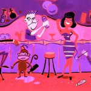
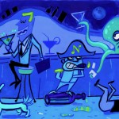
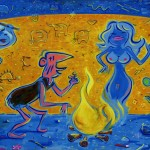
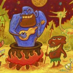
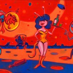
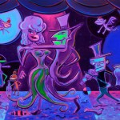
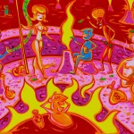
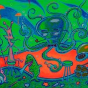
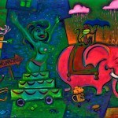

This 19″ x 5′ acrylic painting is painted on a framed out wooden panel. Chain smoking octopus and regulation drinking bird. $1750.00
The Cocktail Hours
Beat Bop
January 29th, 2015 | by Rory Skagen | published in The Cocktail Hours
The Red Mood
January 27th, 2011 | by Rory Skagen | published in The Cocktail Hours

This 5′ long by 22.5″ tall acrylic painting on wood was originally made as a custom bar top. This is a real Rory Skagen cocktail. The recipe is simple: Two parts Depatie and Freeling, one part Angie Dickenson’s mood, and then, just a whisper of Vermouth mixed in with the paint. SOLD
The Blue Hour
January 27th, 2011 | by Rory Skagen | published in The Cocktail Hours

This 35.5″ long by 13″ tall acrylic painting on wood was made as a companion to Rory Skagen’s “The Red Mood”. The recipe is again simple: Eight years of Saturday morning cartoons, one too many bitter Manhattans, and just a twist of Balla. SOLD
Cave Dance
January 27th, 2011 | by Rory Skagen | published in The Cocktail Hours

This 5′ long by 22.5″ tall acrylic painting on wood comes with a custom ebonized red oak frame with a subtle opalescent frost blue glaze. As you can see by this painting; before civilization came and screwed everything up, life was pretty good. $1750
Stewed Gorilla
January 27th, 2011 | by Rory Skagen | published in The Cocktail Hours

This 35.5″ long by 13″ tall acrylic painting on wood comes with a kick-ass weathered gold bamboo frame. Drawn to the tropical since childhood, this sordid little party is the archetype of Rory Skagen’s jungle fantasy. SOLD
The 18,000th Hole
January 27th, 2011 | by Rory Skagen | published in The Cocktail Hours

This 5′ long by 22.5″ tall acrylic painting on wood comes with a custom ebonized red oak frame with a subtle opalescent red glaze. This painting is about what ultimately happens to you when you travel through space in a booze bottle shaped rocket. SOLD
Closing Night
January 27th, 2011 | by Rory Skagen | published in The Cocktail Hours

This 5′ long by 22.5″ tall acrylic painting on wood comes with a custom ebonized red oak frame with a subtle opalescent frost purple glaze. This painting is Rory Skagen’s ode to Halloween and drinking humor. What a way to go. sold
The Brimstone Club
January 27th, 2011 | by Rory Skagen | published in The Cocktail Hours

This 5′ long by 22.5″ tall acrylic painting on wood comes with a custom ebonized red oak frame with a subtle opalescent frost red glaze. Inspired by memories of being a deejay/manager of a live nude stage show in Tucson, Az. “I completely empathize with the demons that work in hell trying to keep everybody […]
The Aquarium
January 27th, 2011 | by Rory Skagen | published in The Cocktail Hours

This 5′ long by 22.5″ tall acrylic painting on wood comes with a custom ebonized red oak frame with a subtle opalescent pea green glaze. Sold
The Drunkenville Carnival
January 27th, 2011 | by Rory Skagen | published in The Cocktail Hours

This 5′ long by 22.5″ tall acrylic painting on wood comes with a custom ebonized red oak frame with a subtle opalescent pea green glaze. “This painting is inspired by a neighborhood bar where I grew up called, ‘The Lazy V’. I remember this whole crowd coming down our desert street on the way to […]